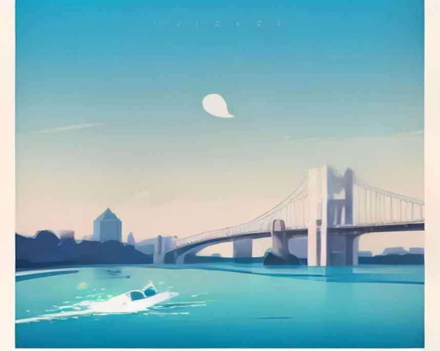

러닝 코스 · 서울
반포 한강공원, 분수가 켜지는 시간에 맞춰 달리는 밤
잠수교를 왕복하며 거리를 세고, 달빛무지개분수 앞에서 마무리하는 서울에서 가장 유명한 야간 러닝.
10.0km58분보통야경
10.0km거리
58분시간
4곳이야기
어떤 길인지
서울 러너들이 성지라고 부르는 구간이다. 이유는 단순하다. 평지에 노면이 좋고, 거리를 세기 쉽고, 밤에 예쁘다. 이 세 가지가 한 곳에 다 있는 데가 생각보다 드물다.
거리를 세기 쉬운 건 잠수교 덕분이다. 편도가 약 1km라 다리를 몇 번 건넜는지만 세면 된다. 잠수교는 한강을 가로질러 달릴 수 있는 사실상 유일한 다리라, 남북을 오가며 코스를 짜는 재미도 있다.
10km를 채우려면 반포대교 북단에서 시작해 잠수교를 지나 한남대교까지 갔다 오면 된다. 이 라인에는 편의점 세 곳, 화장실 다섯 곳, 식수대가 걸려 있다.
4월부터 10월까지는 저녁마다 달빛무지개분수가 켜진다. 분수 시간을 마지막 바퀴에 맞춰두면 마무리가 훨씬 즐거워진다.
더 알아두면 좋은 것
거리를 더 늘리고 싶으면 반포에서 잠수교를 거쳐 뚝섬까지 최대 12km를 뽑을 수 있다. 여의도에서 청담까지 밀면 22km가 나온다.
다만 여의도를 빠져나가는 갈림길에서 잘못 들면 섬 가장자리를 계속 돌게 된다. 처음이라면 지도를 한 번 보고 가는 편이 낫다.
샤워는 반포에 없다. 여의도와 잠실 한강공원에 있다.
가기 전에 알아두면 좋아요
- 저녁에는 자전거와 산책하는 사람이 몰려 좁은 구간에서 페이스가 끊긴다. 기록을 재려면 평일 이른 아침이 낫다.
- 밤에는 반사 조끼나 불빛을 챙기는 게 좋다. 자전거길과 러닝길이 나뉘어 있지만 어두운 구간에서 자전거가 넘어오는 일이 있다.
- 한강변 곳곳에 아리수 급수대가 있어 물병을 들고 나가지 않아도 된다.
아직 확인 중인 것
- 구간별 화장실 정확한 위치
- 분수 운영 시간표
지나는 곳
세빛섬야간 반환점. 조명이 가장 화려한 지점
반포 달빛광장스트레칭·집합 장소
노들섬코인라커 있음. 500원 동전 필요
잠수교편도 1km. 거리 계산의 기준점
반포한강공원 · 한국관광공사 · 공공누리 제1유형